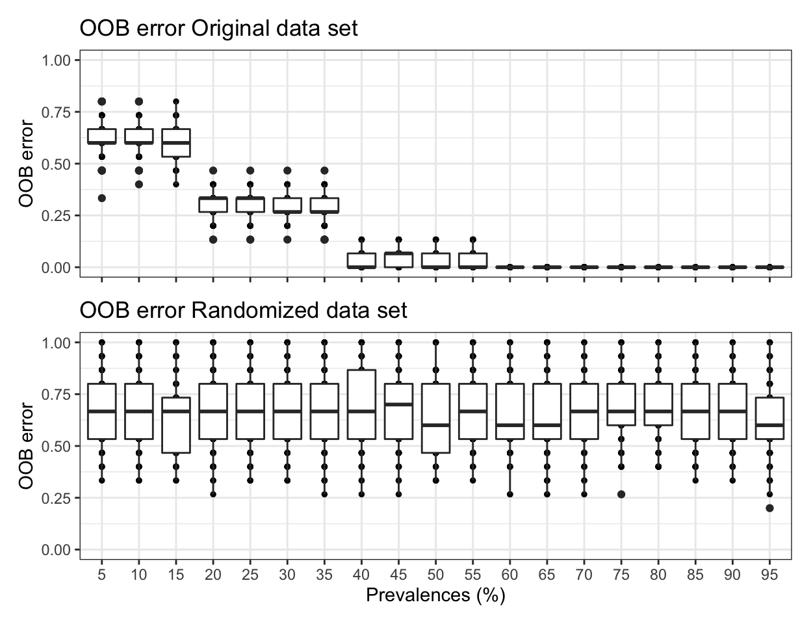

Click here for setup information.
knitr::opts_chunk$set(echo = TRUE, eval = FALSE)
set.seed(119)
#library(conflicted)
#pacman::p_depends(PERFect, local = TRUE)
#pacman::p_depends_reverse(PERFect, local = TRUE)
library(phyloseq); packageVersion("phyloseq")
library(Biostrings); packageVersion("Biostrings")
pacman::p_load(tidyverse, metacoder, hilldiv, patchwork, ampvis2,
agricolae, labdsv, naniar, PERFect, pime, ape, gdata,
pairwiseAdonis, microbiome, seqRFLP, DT, microbiomeMarker,
reactable, downloadthis, captioner, jamba,
install = FALSE, update = FALSE)
options(scipen=999)
knitr::opts_current$get(c(
"cache",
"cache.path",
"cache.rebuild",
"dependson",
"autodep"
))In Part A, we apply arbitrary filtering to the 16S rRNA and ITS data sets. In Part B we use PERFect (PERmutation Filtering test for microbiome data) (Smirnova, Huzurbazar, and Jafari 2019) to filter the data sets. And in Part C of this workflow, we use PIME (Prevalence Interval for Microbiome Evaluation) (Roesch et al. 2020) to filter the FULL 16S rRNA and ITS data sets.
Filtering Results
We begin by summarizing the results of each filtering method on the 16S and ITS data sets. Below you can find the complete workflow for each filtering method.
16S rRNA
(16S rRNA) Table 1 | Summary of Arbitrary, PERfect, and PIME filtering.
(16S rRNA) Table 2 | Sample summary showing the number of reads and ASVs after Arbitrary, PERfect, and PIME filtering.
ITS
(ITS) Table 1 | Summary of Arbitrary, PERfect, and PIME filtering.
(ITS) Table 2 | Sample summary showing the number of reads and ASVs after Arbitrary, PERfect, and PIME filtering.
A. Arbitrary Filtering
For low-count arbitrary filtering, we set the minimum read count to 5 and the prevalence to 20%. Then we apply another filter to remove ASVs with a low variance (0.2).
16S rRNA
Show code
tmp_low_count <- phyloseq::genefilter_sample(
ssu18_ps_work,
filterfun_sample(function(x) x >= 5),
A = 0.2 * nsamples(ssu18_ps_work))
tmp_low_count <- phyloseq::prune_taxa(tmp_low_count, ssu18_ps_work)
tmp_low_var <- phyloseq::filter_taxa(tmp_low_count,
function(x) var(x) > 0.2, prune = TRUE)
ssu18_ps_filt <- tmp_low_var
ssu18_ps_filt@phy_tree <- NULL
tmp_tree <- rtree(ntaxa(ssu18_ps_filt), rooted = TRUE,
tip.label = taxa_names(ssu18_ps_filt))
ssu18_ps_filt <- merge_phyloseq(ssu18_ps_filt,
sample_data,
tmp_tree)
rm(list = ls(pattern = "tmp_"))
ssu18_ps_filtHere is the filtered 16S rRNA phyloseq object.
phyloseq-class experiment-level object
otu_table() OTU Table: [ 1822 taxa and 15 samples ]
sample_data() Sample Data: [ 15 samples by 6 sample variables ]
tax_table() Taxonomy Table: [ 1822 taxa by 8 taxonomic ranks ]
phy_tree() Phylogenetic Tree: [ 1822 tips and 1821 internal nodes ](16S rRNA) Table 3 | Summary of arbitrary filtering where ASVs represented by fewer than 5 reads, present in less than 20% of samples, and/or a variance less than 0.2, were removed.
We can look at how filtering affected total reads and ASVs for each sample.
(16S rRNA) Table 4 | Sample summary showing the number of reads and ASVs after Arbitrary filtering.
ITS
Show code
tmp_low_count <- phyloseq::genefilter_sample(
its18_ps_work,
filterfun_sample(function(x) x >= 5),
A = 0.2 * nsamples(its18_ps_work))
tmp_low_count <- phyloseq::prune_taxa(tmp_low_count, its18_ps_work)
tmp_low_var <- phyloseq::filter_taxa(tmp_low_count,
function(x) var(x) > 0.2, prune = TRUE)
its18_ps_filt <- tmp_low_var
rm(list = ls(pattern = "tmp_"))
its18_ps_filtAnd the filtered ITS phyloseq object.
phyloseq-class experiment-level object
otu_table() OTU Table: [ 816 taxa and 13 samples ]
sample_data() Sample Data: [ 13 samples by 6 sample variables ]
tax_table() Taxonomy Table: [ 816 taxa by 8 taxonomic ranks ](ITS) Table 3 | Summary of arbitrary filtering where ASVs represented by fewer than 5 reads, present in less than 20% of samples, and/or a variance less than 0.2, were removed.
And again, let’s look how filtering affected total reads and ASVs for each sample.
(ITS) Table 4 | Sample summary showing the number of reads and ASVs after Arbitrary filtering.
And that’s it for Arbitrary filtering. Moving on.
B. PERfect Filtering
To run PERFect, we need the ASV tables in data frame format with samples as rows and ASVs as columns. PERFect is sensitive to the order of ASVs, so here we test a) the default order in the phyloseq object and b) ASVs ordered by decreasing abundance.
Setup
Show code
samp_ps_filt <- c("ssu18_ps_work", "its18_ps_work")
for (i in samp_ps_filt) {
tmp_get <- get(i)
tmp_get_tab <- data.frame(t(otu_table(tmp_get)))
tmp_get_tab <- tmp_get_tab %>% tibble::rownames_to_column("ID")
tmp_get_tab <- jamba::mixedSortDF(tmp_get_tab, decreasing = FALSE,
useRownames = FALSE, byCols = 1)
tmp_get_tab <- tmp_get_tab %>% tibble::remove_rownames()
tmp_get_tab <- tmp_get_tab %>% tibble::column_to_rownames("ID")
tmp_get_tab <- data.frame(t(tmp_get_tab))
tmp_get_tab_ord <- data.frame(t(otu_table(tmp_get)))
tmp_get_tab_ord <- tmp_get_tab_ord %>% tibble::rownames_to_column("ID")
tmp_get_tab_ord <- jamba::mixedSortDF(tmp_get_tab_ord, decreasing = TRUE,
useRownames = FALSE, byCols = 1)
tmp_get_tab_ord <- tmp_get_tab_ord %>% tibble::remove_rownames()
tmp_get_tab_ord <- tmp_get_tab_ord %>% tibble::column_to_rownames("ID")
tmp_get_tab_ord <- data.frame(t(tmp_get_tab_ord))
tmp_tab_name <- purrr::map_chr(i, ~ paste0(., "_perfect"))
assign(tmp_tab_name, tmp_get_tab)
tmp_tab_ord_name <- purrr::map_chr(i, ~ paste0(., "_ord_perfect"))
assign(tmp_tab_ord_name, tmp_get_tab_ord)
rm(list = ls(pattern = "tmp_"))
}
objects()Filter
Next we run the filtering analysis using PERFect_sim. The other option is PERFect_perm however I could not get PERFect_perm to work as of this writing. The process never finished :/
We need to set an initial p-value cutoff. For 16S rRNA, we use 0.05 and for ITS we use 0.1.
# Set a pvalue cutoff
ssu_per_pval <- 0.05
its_per_pval <- 0.10Show code
for (i in samp_ps_filt) {
tmp_get <- get(purrr::map_chr(i, ~ paste0(., "_perfect")))
tmp_pval <- gsub("18.*", "_per_pval", i)
tmp_get_ord <- get(purrr::map_chr(i, ~ paste0(., "_ord_perfect")))
tmp_sim <- PERFect_sim(X = tmp_get, alpha = get(tmp_pval), Order = "NP", center = FALSE)
dim(tmp_sim$filtX)
tmp_sim_ord <- PERFect_sim(X = tmp_get_ord, alpha = get(tmp_pval), Order = "NP", center = FALSE)
dim(tmp_sim_ord$filtX)
tmp_sim_name <- purrr::map_chr(i, ~ paste0(., "_perfect_sim"))
assign(tmp_sim_name, tmp_sim)
tmp_sim_ord_name <- purrr::map_chr(i, ~ paste0(., "_ord_perfect_sim"))
assign(tmp_sim_ord_name, tmp_sim_ord)
tmp_path <- file.path("files/filtering/perfect/rdata/")
saveRDS(tmp_sim, paste(tmp_path, tmp_sim_name, ".rds", sep = ""))
saveRDS(tmp_sim_ord, paste(tmp_path, tmp_sim_ord_name, ".rds", sep = ""))
rm(list = ls(pattern = "tmp_"))
}
objects(pattern = "_sim")How many ASVs were retained after filtering?
First the 16S rRNA data set. Default ordering resulted in 20172 ASVs and reordering the data resulted in 4466 ASVs.
And then the ITS data set. Default ordering resulted in 3354 ASVs and reordering the data resulted in 2133 ASVs.
For some reason, the package does not remove based on the p value cutoff that we set earlier (0.05). So we need to filter out the ASVs that have a higher p-value than the cutoff.
Total 16S rRNA ASVs with p-value less than 0.05
[1] default order: ASVs before checking p value was 20172 and after was 1679
[1] decreasing order: ASVs before checking p value was 4466 and after was 1659
[1] --------------------------------------
Total ITS ASVs with p-value less than 0.1
[1] default order: ASVs before checking p-value was 3354 and after was 306
[1] decreasing order: ASVs before checking p-value was 2133 and after was 264Now we can make phyloseq objects. Manual inspection of the results from PERFect_sim for the 16S rRNA data indicated that using the decreasing order and filtering p-values less than 0.05 yielded in the best results. Manual inspection of the results from PERFect_sim for the ITS data indicated that using the default order and filtering p-values less than 0.1 yielded in the best results. These approaches limited the number of ASVs found in only 1 or 2 samples. So first we filter out ASVs with p-values lower than the defined cutoff and then make the objects.
# pvalue cutoffs set earlier
ssu_per_pval <- 0.05
its_per_pval <- 0.10
# Choose method
ssu_select <- "_ord_perfect"
its_select <- "_perfect"Show code
for (i in samp_ps_filt) {
## select pval cutoff and method
tmp_pval <- gsub("18.*", "_per_pval", i)
tmp_select <- gsub("18.*", "_select", i)
tmp_get <- get(purrr::map_chr(i, ~ paste0(., get(tmp_select))))
tmp_get_sim <- get(purrr::map_chr(i, ~ paste0(., get(tmp_select), "_sim")))
tmp_filt <- data.frame(t(tmp_get_sim$filtX))
tmp_filt <- tmp_filt %>% tibble::rownames_to_column("ID")
tmp_tab <- data.frame(t(tmp_get))
tmp_tab <- tmp_tab %>% tibble::rownames_to_column("ID")
tmp_pvals <- data.frame(tmp_get_sim$pvals)
tmp_pvals <- tmp_pvals %>% tibble::rownames_to_column("ID") %>%
dplyr::rename("pval" = 2)
tmp_pvals <- tmp_pvals %>% filter(pval <= get(tmp_pval))
tmp_merge <- dplyr::left_join(tmp_pvals, tmp_tab, by = "ID")
tmp_merge[, 2] <- NULL
tmp_merge <- tmp_merge %>% tibble::column_to_rownames("ID")
tmp_tax <- data.frame(tax_table(get(i))) %>% tibble::rownames_to_column("ID")
tmp_tax <- dplyr::left_join(tmp_pvals, tmp_tax, by = "ID")
tmp_tax[, 2] <- NULL
tmp_tax <- tmp_tax %>% tibble::column_to_rownames("ID")
# Build PS object
tmp_samp <- data.frame(sample_data(get(i)))
identical(row.names(tmp_tax), row.names(tmp_merge))
tmp_merge <- data.frame(t(tmp_merge))
tmp_merge <- as.matrix(tmp_merge)
tmp_tax <- as.matrix(tmp_tax)
tmp_ps <- phyloseq(otu_table(tmp_merge, taxa_are_rows = FALSE),
tax_table(tmp_tax),
sample_data(tmp_samp))
tmp_tree <- rtree(ntaxa(tmp_ps), rooted = TRUE,
tip.label = taxa_names(tmp_ps))
tmp_ps <- merge_phyloseq(tmp_ps,
sample_data,
tmp_tree)
tmp_ps_name <- purrr::map_chr(i, ~ paste0(., "_perf_filt"))
assign(tmp_ps_name, tmp_ps)
rm(list = ls(pattern = "tmp_"))
}
ssu18_ps_perfect <- ssu18_ps_work_perf_filt
its18_ps_perfect <- its18_ps_work_perf_filt
rm(list = ls(pattern = "_perf_filt"))[1] 16S rRNA phyloseq objectphyloseq-class experiment-level object
otu_table() OTU Table: [ 1659 taxa and 15 samples ]
sample_data() Sample Data: [ 15 samples by 6 sample variables ]
tax_table() Taxonomy Table: [ 1659 taxa by 8 taxonomic ranks ]
phy_tree() Phylogenetic Tree: [ 1659 tips and 1658 internal nodes ][1] ITS phyloseq objectphyloseq-class experiment-level object
otu_table() OTU Table: [ 306 taxa and 13 samples ]
sample_data() Sample Data: [ 13 samples by 6 sample variables ]
tax_table() Taxonomy Table: [ 306 taxa by 8 taxonomic ranks ]
phy_tree() Phylogenetic Tree: [ 306 tips and 305 internal nodes ]Summary
How many reads and ASVs were removed following PERfect filtering?
16S rRNA
(16S rRNA) Table 5 | Summary of PERfect filtering using the decreased order and filtering p-values < 0.05.
ITS
(ITS) Table 5 | Summary of PERfect filtering using the defualt order and filtering p-values < 0.10.
Here is a summary table of total reads and ASVs on a per sample basis after filtering.
16S rRNA
(16S rRNA) Table 6 | Sample summary showing the number of reads and ASVs after PERfect filtering.
ITS
(ITS) Table 6 | Sample summary showing the number of reads and ASVs after PERfect filtering.
And finally, save the PERfect filtered phyloseq objects.
Show code
saveRDS(ssu18_ps_perfect, "files/filtering/perfect/rdata/ssu18_ps_perfect.rds")
saveRDS(its18_ps_perfect, "files/filtering/perfect/rdata/its18_ps_perfect.rds")C. PIME Filtering
The first step in the PIME process is to rarefy the data and then proceed with the filtering. Unlike the two previous workflows—which combined the analyses of the 16S rRNA and ITS data sets—here the two data sets will be analyzed separately because the PIME workflow is considerably more complicated.
16S rRNA
Setup
First, choose a phyloseq object and a sample data frame
ssu18_pime_ds <- ssu18_ps_work
ssu18_which_pime <- "ssu18_pime_ds"
ssu18_pime_ds@phy_tree <- NULL
ssu18_pime_dsphyloseq-class experiment-level object
otu_table() OTU Table: [ 20173 taxa and 15 samples ]
sample_data() Sample Data: [ 15 samples by 6 sample variables ]
tax_table() Taxonomy Table: [ 20173 taxa by 8 taxonomic ranks ]ssu18_pime_sample_d <- data.frame(rowSums(otu_table(ssu18_pime_ds_full)))
ssu18_pime_sample_d <- ssu18_pime_sample_d %>% dplyr::rename(total_reads = 1)
ssu18_pime_ds <- rarefy_even_depth(ssu18_pime_ds_full,
sample.size = min(ssu18_pime_sample_d$total_reads),
trimOTUs = TRUE, replace = FALSE,
rngseed = 119)2741 OTUs were removed because they are no longer
present in any sample after random subsamplingphyloseq-class experiment-level object
otu_table() OTU Table: [ 17432 taxa and 15 samples ]
sample_data() Sample Data: [ 15 samples by 6 sample variables ]
tax_table() Taxonomy Table: [ 17432 taxa by 8 taxonomic ranks ]The first step in PIME is to define if the microbial community presents a high relative abundance of taxa with low prevalence, which is considered as noise in PIME analysis. This is calculated by random forests analysis and is the baseline noise detection.
ssu18_pime.oob.error <- pime.oob.error(ssu18_pime_ds, "TEMP")[1] 0.6666667Split by Predictor Variable
data.frame(sample_data(ssu18_pime_ds))
ssu18_per_variable_obj <- pime.split.by.variable(ssu18_pime_ds, "TEMP")
ssu18_per_variable_obj$`0`
phyloseq-class experiment-level object
otu_table() OTU Table: [ 7883 taxa and 5 samples ]
sample_data() Sample Data: [ 5 samples by 6 sample variables ]
tax_table() Taxonomy Table: [ 7883 taxa by 8 taxonomic ranks ]
$`3`
phyloseq-class experiment-level object
otu_table() OTU Table: [ 7173 taxa and 5 samples ]
sample_data() Sample Data: [ 5 samples by 6 sample variables ]
tax_table() Taxonomy Table: [ 7173 taxa by 8 taxonomic ranks ]
$`8`
phyloseq-class experiment-level object
otu_table() OTU Table: [ 6027 taxa and 5 samples ]
sample_data() Sample Data: [ 5 samples by 6 sample variables ]
tax_table() Taxonomy Table: [ 6027 taxa by 8 taxonomic ranks ]Calculate Prevalence Intervals
Using the output of pime.split.by.variable, we calculate the prevalence intervals with the function pime.prevalence. This function estimates the highest prevalence possible (no empty ASV table), calculates prevalence for taxa, starting at 5 maximum prevalence possible (no empty ASV table or dropping samples). After prevalence calculation, each prevalence interval are merged.
ssu18_prevalences <- pime.prevalence(ssu18_per_variable_obj)
ssu18_prevalencesDetailed results for all prevalences intervals
$`5`
phyloseq-class experiment-level object
otu_table() OTU Table: [ 17432 taxa and 15 samples ]
sample_data() Sample Data: [ 15 samples by 6 sample variables ]
tax_table() Taxonomy Table: [ 17432 taxa by 8 taxonomic ranks ]
$`10`
phyloseq-class experiment-level object
otu_table() OTU Table: [ 17432 taxa and 15 samples ]
sample_data() Sample Data: [ 15 samples by 6 sample variables ]
tax_table() Taxonomy Table: [ 17432 taxa by 8 taxonomic ranks ]
$`15`
phyloseq-class experiment-level object
otu_table() OTU Table: [ 17432 taxa and 15 samples ]
sample_data() Sample Data: [ 15 samples by 6 sample variables ]
tax_table() Taxonomy Table: [ 17432 taxa by 8 taxonomic ranks ]
$`20`
phyloseq-class experiment-level object
otu_table() OTU Table: [ 2253 taxa and 15 samples ]
sample_data() Sample Data: [ 15 samples by 6 sample variables ]
tax_table() Taxonomy Table: [ 2253 taxa by 8 taxonomic ranks ]
$`25`
phyloseq-class experiment-level object
otu_table() OTU Table: [ 2253 taxa and 15 samples ]
sample_data() Sample Data: [ 15 samples by 6 sample variables ]
tax_table() Taxonomy Table: [ 2253 taxa by 8 taxonomic ranks ]
$`30`
phyloseq-class experiment-level object
otu_table() OTU Table: [ 2253 taxa and 15 samples ]
sample_data() Sample Data: [ 15 samples by 6 sample variables ]
tax_table() Taxonomy Table: [ 2253 taxa by 8 taxonomic ranks ]
$`35`
phyloseq-class experiment-level object
otu_table() OTU Table: [ 2253 taxa and 15 samples ]
sample_data() Sample Data: [ 15 samples by 6 sample variables ]
tax_table() Taxonomy Table: [ 2253 taxa by 8 taxonomic ranks ]
$`40`
phyloseq-class experiment-level object
otu_table() OTU Table: [ 1058 taxa and 15 samples ]
sample_data() Sample Data: [ 15 samples by 6 sample variables ]
tax_table() Taxonomy Table: [ 1058 taxa by 8 taxonomic ranks ]
$`45`
phyloseq-class experiment-level object
otu_table() OTU Table: [ 1058 taxa and 15 samples ]
sample_data() Sample Data: [ 15 samples by 6 sample variables ]
tax_table() Taxonomy Table: [ 1058 taxa by 8 taxonomic ranks ]
$`50`
phyloseq-class experiment-level object
otu_table() OTU Table: [ 1058 taxa and 15 samples ]
sample_data() Sample Data: [ 15 samples by 6 sample variables ]
tax_table() Taxonomy Table: [ 1058 taxa by 8 taxonomic ranks ]
$`55`
phyloseq-class experiment-level object
otu_table() OTU Table: [ 1058 taxa and 15 samples ]
sample_data() Sample Data: [ 15 samples by 6 sample variables ]
tax_table() Taxonomy Table: [ 1058 taxa by 8 taxonomic ranks ]
$`60`
phyloseq-class experiment-level object
otu_table() OTU Table: [ 585 taxa and 15 samples ]
sample_data() Sample Data: [ 15 samples by 6 sample variables ]
tax_table() Taxonomy Table: [ 585 taxa by 8 taxonomic ranks ]
$`65`
phyloseq-class experiment-level object
otu_table() OTU Table: [ 585 taxa and 15 samples ]
sample_data() Sample Data: [ 15 samples by 6 sample variables ]
tax_table() Taxonomy Table: [ 585 taxa by 8 taxonomic ranks ]
$`70`
phyloseq-class experiment-level object
otu_table() OTU Table: [ 585 taxa and 15 samples ]
sample_data() Sample Data: [ 15 samples by 6 sample variables ]
tax_table() Taxonomy Table: [ 585 taxa by 8 taxonomic ranks ]
$`75`
phyloseq-class experiment-level object
otu_table() OTU Table: [ 585 taxa and 15 samples ]
sample_data() Sample Data: [ 15 samples by 6 sample variables ]
tax_table() Taxonomy Table: [ 585 taxa by 8 taxonomic ranks ]
$`80`
phyloseq-class experiment-level object
otu_table() OTU Table: [ 294 taxa and 15 samples ]
sample_data() Sample Data: [ 15 samples by 6 sample variables ]
tax_table() Taxonomy Table: [ 294 taxa by 8 taxonomic ranks ]
$`85`
phyloseq-class experiment-level object
otu_table() OTU Table: [ 294 taxa and 15 samples ]
sample_data() Sample Data: [ 15 samples by 6 sample variables ]
tax_table() Taxonomy Table: [ 294 taxa by 8 taxonomic ranks ]
$`90`
phyloseq-class experiment-level object
otu_table() OTU Table: [ 294 taxa and 15 samples ]
sample_data() Sample Data: [ 15 samples by 6 sample variables ]
tax_table() Taxonomy Table: [ 294 taxa by 8 taxonomic ranks ]
$`95`
phyloseq-class experiment-level object
otu_table() OTU Table: [ 294 taxa and 15 samples ]
sample_data() Sample Data: [ 15 samples by 6 sample variables ]
tax_table() Taxonomy Table: [ 294 taxa by 8 taxonomic ranks ]Calculate Best Prevalence
Finally, we use the function pime.best.prevalence to calculate the best prevalence. The function uses randomForest to build random forests trees for samples classification and variable importance computation. It performs classifications for each prevalence interval returned by pime.prevalence. Variable importance is calculated, returning the Mean Decrease Accuracy (MDA), Mean Decrease Impurity (MDI), overall and by sample group, and taxonomy for each ASV. PIME keeps the top 30 variables with highest MDA each prevalence level.
set.seed(1911)
ssu18_best.prev <- pime.best.prevalence(ssu18_prevalences, "TEMP") Interval OOB error rate (%) OTUs Nseqs
1 Prevalence 5% 66.67 17432 376320
2 Prevalence 10% 66.67 17432 376320
3 Prevalence 15% 60 17432 376320
4 Prevalence 20% 40 2253 282185
5 Prevalence 25% 33.33 2253 282185
6 Prevalence 30% 26.67 2253 282185
7 Prevalence 35% 26.67 2253 282185
8 Prevalence 40% 6.67 1058 232532
9 Prevalence 45% 6.67 1058 232532
10 Prevalence 50% 0 1058 232532
11 Prevalence 55% 0 1058 232532
12 Prevalence 60% 0 585 192484
13 Prevalence 65% 0 585 192484
14 Prevalence 70% 0 585 192484
15 Prevalence 75% 0 585 192484
16 Prevalence 80% 0 294 149258
17 Prevalence 85% 0 294 149258
18 Prevalence 90% 0 294 149258
19 Prevalence 95% 0 294 149258ssu18_what_is_best <- ssu18_best.prev$`OOB error`
ssu18_what_is_best[, c(2:4)] <- sapply(ssu18_what_is_best[, c(2:4)], as.numeric)
ssu18_what_is_best <- ssu18_what_is_best %>%
dplyr::rename("OOB_error_rate" = "OOB error rate (%)")
ssu18_what_is_best$Interval <- str_replace_all(ssu18_what_is_best$Interval, "%", "")
ssu18_best <- with(ssu18_what_is_best, Interval[which.min(OOB_error_rate)])
ssu18_best <- paste("`", ssu18_best, "`", sep = "")
ssu18_prev_choice <- paste("ssu18_best.prev$`Importance`$", ssu18_best, sep = "")
ssu18_imp_best <- eval(parse(text = (ssu18_prev_choice)))Looks like the lowest OOB error rate (%) that retains the most ASVs is 0% from Prevalence 50. We will use this interval.
Best Prevalence Summary
(16S rRNA) Table 7 | Summary of top 30 ASVs from the chosen prevalence interval.
Here is a list of the top 30 ASVs.
[1] "ASV114" "ASV146" "ASV39" "ASV157" "ASV488" "ASV137"
[7] "ASV340" "ASV289" "ASV918" "ASV282" "ASV861" "ASV314"
[13] "ASV508" "ASV1035" "ASV1426" "ASV254" "ASV410" "ASV212"
[19] "ASV134" "ASV185" "ASV64" "ASV472" "ASV575" "ASV558"
[25] "ASV454" "ASV686" "ASV199" "ASV412" "ASV324" "ASV126" Now we need to create a phyloseq object of ASVs at this cutoff (Prevalence 50).
ssu18_best_val <- str_replace_all(ssu18_best, "Prevalence ", "")
ssu18_best_val <- paste("ssu18_prevalences$", ssu18_best_val, sep = "")
ssu18_prevalence_best <- eval(parse(text = (ssu18_best_val)))
saveRDS(ssu18_prevalence_best, "files/filtering/pime/rdata/ssu18_prevalence_best.rds")And look at a summary of the phyloseq object.
phyloseq-class experiment-level object
otu_table() OTU Table: [ 1058 taxa and 15 samples ]
sample_data() Sample Data: [ 15 samples by 6 sample variables ]
tax_table() Taxonomy Table: [ 1058 taxa by 8 taxonomic ranks ](16S rRNA) Table 5 | Summary of PERfect filtering using the decreased order and filtering p-values < 0.05.
Estimate Error in Prediction
Using the function pime.error.prediction we can estimate the error in prediction. For each prevalence interval, this function randomizes the samples labels into arbitrary groupings using n random permutations, defined by the bootstrap value. For each, randomized and prevalence filtered, data set the OOB error rate is calculated to estimate whether the original differences in groups of samples occur by chance. Results are in a list containing a table and a box plot summarizing the results.
ssu18_randomized <- pime.error.prediction(ssu18_pime_ds, "TEMP",
bootstrap = 100, parallel = TRUE,
max.prev = 95)(16S rRNA) Table 8 | Results of 100 random permutations for each prevalence interval based on a function that randomizes the samples labels into arbitrary groupings. using n random permutations. For each randomized and prevalence filtered data set, the OOB error rate is calculated to estimate whether the original differences in groups of samples occur by chance.
It is also possible to estimate the variation of OOB error for each prevalence interval filtering. This is done by running the random forests classification for n times, determined by the bootstrap value. The function will return a box plot figure and a table for each classification error.
ssu18_replicated.oob.error <- pime.oob.replicate(ssu18_prevalences, "TEMP",
bootstrap = 100, parallel = TRUE)
(16S rRNA) Figure 1 | OOB error rate for the original data set (top) & the randomized data (bottom).
To obtain the confusion matrix from random forests classification use the following:
ssu18_prev_confuse <- paste("ssu18_best.prev$`Confusion`$", ssu18_best, sep = "")
eval(parse(text = (ssu18_prev_confuse)))Save Phyloseq PIME objects
ssu18_ps_pime <- ssu18_prevalence_best
ssu18_ps_pime_tree <- rtree(ntaxa(ssu18_ps_pime), rooted = TRUE,
tip.label = taxa_names(ssu18_ps_pime))
ssu18_ps_pime <- merge_phyloseq(ssu18_ps_pime,
sample_data,
ssu18_ps_pime_tree)
saveRDS(ssu18_ps_pime, "files/filtering/pime/rdata/ssu18_ps_pime.rds")Split & save by predictor variable
data.frame(sample_data(ssu18_ps_pime))
ssu18_ps_pime_split <- pime.split.by.variable(ssu18_ps_pime, "TEMP")
saveRDS(ssu18_ps_pime_split$`0`, "files/filtering/pime/rdata/ssu18_ps_pime_0.rds")
saveRDS(ssu18_ps_pime_split$`3`, "files/filtering/pime/rdata/ssu18_ps_pime_3.rds")
saveRDS(ssu18_ps_pime_split$`8`, "files/filtering/pime/rdata/ssu18_ps_pime_8.rds")$`0`
phyloseq-class experiment-level object
otu_table() OTU Table: [ 752 taxa and 5 samples ]
sample_data() Sample Data: [ 5 samples by 6 sample variables ]
tax_table() Taxonomy Table: [ 752 taxa by 8 taxonomic ranks ]
phy_tree() Phylogenetic Tree: [ 752 tips and 751 internal nodes ]
$`3`
phyloseq-class experiment-level object
otu_table() OTU Table: [ 692 taxa and 5 samples ]
sample_data() Sample Data: [ 5 samples by 6 sample variables ]
tax_table() Taxonomy Table: [ 692 taxa by 8 taxonomic ranks ]
phy_tree() Phylogenetic Tree: [ 692 tips and 691 internal nodes ]
$`8`
phyloseq-class experiment-level object
otu_table() OTU Table: [ 355 taxa and 5 samples ]
sample_data() Sample Data: [ 5 samples by 6 sample variables ]
tax_table() Taxonomy Table: [ 355 taxa by 8 taxonomic ranks ]
phy_tree() Phylogenetic Tree: [ 355 tips and 354 internal nodes ]Summary
You know the routine. How did filtering affect total reads and ASVs for each sample?
(16S rRNA) Table 9 | Sample summary showing the number of reads and ASVs after PIME filtering.
And here is how the subsets changed through the PIME filtering process.
(16S rRNA) Table 10 | Changes in read count and total ASVs during PIME filtering.
ITS
Setup
First, choose a phyloseq object and a sample data frame
its18_pime_ds <- its18_ps_work
its18_which_pime <- "its18_pime_ds"
its18_pime_ds@phy_tree <- NULLphyloseq-class experiment-level object
otu_table() OTU Table: [ 3355 taxa and 13 samples ]
sample_data() Sample Data: [ 13 samples by 6 sample variables ]
tax_table() Taxonomy Table: [ 3355 taxa by 8 taxonomic ranks ]its18_pime_sample_d <- data.frame(rowSums(otu_table(its18_pime_ds_full)))
its18_pime_sample_d <- its18_pime_sample_d %>% dplyr::rename(total_reads = 1)
its18_pime_ds <- rarefy_even_depth(its18_pime_ds_full,
sample.size = min(its18_pime_sample_d$total_reads),
trimOTUs = TRUE, replace = FALSE,
rngseed = 119)298 OTUs were removed because they are no longer
present in any sample after random subsamplingphyloseq-class experiment-level object
otu_table() OTU Table: [ 3057 taxa and 13 samples ]
sample_data() Sample Data: [ 13 samples by 6 sample variables ]
tax_table() Taxonomy Table: [ 3057 taxa by 8 taxonomic ranks ]The first step in PIME is to define if the microbial community presents a high relative abundance of taxa with low prevalence, which is considered as noise in PIME analysis. This is calculated by random forests analysis and is the baseline noise detection.
its18_pime.oob.error <- pime.oob.error(its18_pime_ds, "TEMP")[1] 0.3846154Split by Predictor Variable
data.frame(sample_data(its18_pime_ds))
its18_per_variable_obj <- pime.split.by.variable(its18_pime_ds, "TEMP")
its18_per_variable_obj$`0`
phyloseq-class experiment-level object
otu_table() OTU Table: [ 1932 taxa and 5 samples ]
sample_data() Sample Data: [ 5 samples by 6 sample variables ]
tax_table() Taxonomy Table: [ 1932 taxa by 8 taxonomic ranks ]
$`3`
phyloseq-class experiment-level object
otu_table() OTU Table: [ 1682 taxa and 4 samples ]
sample_data() Sample Data: [ 4 samples by 6 sample variables ]
tax_table() Taxonomy Table: [ 1682 taxa by 8 taxonomic ranks ]
$`8`
phyloseq-class experiment-level object
otu_table() OTU Table: [ 1306 taxa and 4 samples ]
sample_data() Sample Data: [ 4 samples by 6 sample variables ]
tax_table() Taxonomy Table: [ 1306 taxa by 8 taxonomic ranks ]Calculate Prevalence Intervals
Using the output of pime.split.by.variable, we calculate the prevalence intervals with the function pime.prevalence. This function estimates the highest prevalence possible (no empty ASV table), calculates prevalence for taxa, starting at 5 maximum prevalence possible (no empty ASV table or dropping samples). After prevalence calculation, each prevalence interval are merged.
its18_prevalences <- pime.prevalence(its18_per_variable_obj)
its18_prevalencesDetailed results for all prevalences intervals
$`5`
phyloseq-class experiment-level object
otu_table() OTU Table: [ 3057 taxa and 13 samples ]
sample_data() Sample Data: [ 13 samples by 6 sample variables ]
tax_table() Taxonomy Table: [ 3057 taxa by 8 taxonomic ranks ]
$`10`
phyloseq-class experiment-level object
otu_table() OTU Table: [ 3057 taxa and 13 samples ]
sample_data() Sample Data: [ 13 samples by 6 sample variables ]
tax_table() Taxonomy Table: [ 3057 taxa by 8 taxonomic ranks ]
$`15`
phyloseq-class experiment-level object
otu_table() OTU Table: [ 3057 taxa and 13 samples ]
sample_data() Sample Data: [ 13 samples by 6 sample variables ]
tax_table() Taxonomy Table: [ 3057 taxa by 8 taxonomic ranks ]
$`20`
phyloseq-class experiment-level object
otu_table() OTU Table: [ 2421 taxa and 13 samples ]
sample_data() Sample Data: [ 13 samples by 6 sample variables ]
tax_table() Taxonomy Table: [ 2421 taxa by 8 taxonomic ranks ]
$`25`
phyloseq-class experiment-level object
otu_table() OTU Table: [ 1152 taxa and 13 samples ]
sample_data() Sample Data: [ 13 samples by 6 sample variables ]
tax_table() Taxonomy Table: [ 1152 taxa by 8 taxonomic ranks ]
$`30`
phyloseq-class experiment-level object
otu_table() OTU Table: [ 1152 taxa and 13 samples ]
sample_data() Sample Data: [ 13 samples by 6 sample variables ]
tax_table() Taxonomy Table: [ 1152 taxa by 8 taxonomic ranks ]
$`35`
phyloseq-class experiment-level object
otu_table() OTU Table: [ 1152 taxa and 13 samples ]
sample_data() Sample Data: [ 13 samples by 6 sample variables ]
tax_table() Taxonomy Table: [ 1152 taxa by 8 taxonomic ranks ]
$`40`
phyloseq-class experiment-level object
otu_table() OTU Table: [ 873 taxa and 13 samples ]
sample_data() Sample Data: [ 13 samples by 6 sample variables ]
tax_table() Taxonomy Table: [ 873 taxa by 8 taxonomic ranks ]
$`45`
phyloseq-class experiment-level object
otu_table() OTU Table: [ 873 taxa and 13 samples ]
sample_data() Sample Data: [ 13 samples by 6 sample variables ]
tax_table() Taxonomy Table: [ 873 taxa by 8 taxonomic ranks ]
$`50`
phyloseq-class experiment-level object
otu_table() OTU Table: [ 474 taxa and 13 samples ]
sample_data() Sample Data: [ 13 samples by 6 sample variables ]
tax_table() Taxonomy Table: [ 474 taxa by 8 taxonomic ranks ]
$`55`
phyloseq-class experiment-level object
otu_table() OTU Table: [ 474 taxa and 13 samples ]
sample_data() Sample Data: [ 13 samples by 6 sample variables ]
tax_table() Taxonomy Table: [ 474 taxa by 8 taxonomic ranks ]
$`60`
phyloseq-class experiment-level object
otu_table() OTU Table: [ 336 taxa and 13 samples ]
sample_data() Sample Data: [ 13 samples by 6 sample variables ]
tax_table() Taxonomy Table: [ 336 taxa by 8 taxonomic ranks ]
$`65`
phyloseq-class experiment-level object
otu_table() OTU Table: [ 336 taxa and 13 samples ]
sample_data() Sample Data: [ 13 samples by 6 sample variables ]
tax_table() Taxonomy Table: [ 336 taxa by 8 taxonomic ranks ]
$`70`
phyloseq-class experiment-level object
otu_table() OTU Table: [ 336 taxa and 13 samples ]
sample_data() Sample Data: [ 13 samples by 6 sample variables ]
tax_table() Taxonomy Table: [ 336 taxa by 8 taxonomic ranks ]
$`75`
phyloseq-class experiment-level object
otu_table() OTU Table: [ 171 taxa and 13 samples ]
sample_data() Sample Data: [ 13 samples by 6 sample variables ]
tax_table() Taxonomy Table: [ 171 taxa by 8 taxonomic ranks ]
$`80`
phyloseq-class experiment-level object
otu_table() OTU Table: [ 114 taxa and 13 samples ]
sample_data() Sample Data: [ 13 samples by 6 sample variables ]
tax_table() Taxonomy Table: [ 114 taxa by 8 taxonomic ranks ]
$`85`
phyloseq-class experiment-level object
otu_table() OTU Table: [ 114 taxa and 13 samples ]
sample_data() Sample Data: [ 13 samples by 6 sample variables ]
tax_table() Taxonomy Table: [ 114 taxa by 8 taxonomic ranks ]
$`90`
phyloseq-class experiment-level object
otu_table() OTU Table: [ 114 taxa and 13 samples ]
sample_data() Sample Data: [ 13 samples by 6 sample variables ]
tax_table() Taxonomy Table: [ 114 taxa by 8 taxonomic ranks ]
$`95`
phyloseq-class experiment-level object
otu_table() OTU Table: [ 114 taxa and 13 samples ]
sample_data() Sample Data: [ 13 samples by 6 sample variables ]
tax_table() Taxonomy Table: [ 114 taxa by 8 taxonomic ranks ]Calculate Best Prevalence
Finally, we use the function pime.best.prevalence to calculate the best prevalence. The function uses randomForest to build random forests trees for samples classification and variable importance computation. It performs classifications for each prevalence interval returned by pime.prevalence. Variable importance is calculated, returning the Mean Decrease Accuracy (MDA), Mean Decrease Impurity (MDI), overall and by sample group, and taxonomy for each ASV. PIME keeps the top 30 variables with highest MDA each prevalence level.
set.seed(1911)
its18_best.prev <- pime.best.prevalence(its18_prevalences, "TEMP") Interval OOB error rate (%) OTUs Nseqs
1 Prevalence 5% 38.46 3057 119236
2 Prevalence 10% 53.85 3057 119236
3 Prevalence 15% 38.46 3057 119236
4 Prevalence 20% 38.46 2421 112518
5 Prevalence 25% 38.46 1152 91780
6 Prevalence 30% 23.08 1152 91780
7 Prevalence 35% 15.38 1152 91780
8 Prevalence 40% 30.77 873 82647
9 Prevalence 45% 15.38 873 82647
10 Prevalence 50% 7.69 474 67665
11 Prevalence 55% 0 474 67665
12 Prevalence 60% 7.69 336 60556
13 Prevalence 65% 0 336 60556
14 Prevalence 70% 7.69 336 60556
15 Prevalence 75% 0 171 44260
16 Prevalence 80% 0 114 33492
17 Prevalence 85% 0 114 33492
18 Prevalence 90% 0 114 33492
19 Prevalence 95% 0 114 33492its18_what_is_best <- its18_best.prev$`OOB error`
its18_what_is_best[, c(2:4)] <- sapply(its18_what_is_best[, c(2:4)], as.numeric)
its18_what_is_best <- its18_what_is_best %>%
dplyr::rename("OOB_error_rate" = "OOB error rate (%)")
its18_what_is_best$Interval <- str_replace_all(its18_what_is_best$Interval, "%", "")
its18_best <- with(its18_what_is_best, Interval[which.min(OOB_error_rate)])
its18_best <- paste("`", its18_best, "`", sep = "")
its18_prev_choice <- paste("its18_best.prev$`Importance`$", its18_best, sep = "")
its18_imp_best <- eval(parse(text = (its18_prev_choice)))Looks like the lowest OOB error rate (%) that retains the most ASVs is 0% from Prevalence 55. We will use this interval.
Best Prevalence Summary
(ITS) Table 7 | Summary of top 30 ASVs from the chosen prevalence interval.
[1] "ASV307" "ASV302" "ASV677" "ASV643" "ASV71" "ASV437"
[7] "ASV125" "ASV318" "ASV502" "ASV104" "ASV40" "ASV1141"
[13] "ASV481" "ASV349" "ASV659" "ASV653" "ASV33" "ASV118"
[19] "ASV3" "ASV184" "ASV164" "ASV81" "ASV154" "ASV567"
[25] "ASV46" "ASV140" "ASV570" "ASV1318" "ASV185" "ASV603" Now we need to create a phyloseq object of ASVs at this cutoff (Prevalence 55).
its18_best_val <- str_replace_all(its18_best, "Prevalence ", "")
its18_best_val <- paste("its18_prevalences$", its18_best_val, sep = "")
its18_prevalence_best <- eval(parse(text = (its18_best_val)))
saveRDS(its18_prevalence_best, "files/filtering/pime/rdata/its18_asv_prevalence_best.rds")And look at a summary of the data.
phyloseq-class experiment-level object
otu_table() OTU Table: [ 474 taxa and 13 samples ]
sample_data() Sample Data: [ 13 samples by 6 sample variables ]
tax_table() Taxonomy Table: [ 474 taxa by 8 taxonomic ranks ](ITS) Table 5 | Summary of PERfect filtering using the defualt order and filtering p-values < 0.10.
Estimate Error in Prediction
Using the function pime.error.prediction we can estimate the error in prediction. For each prevalence interval, this function randomizes the samples labels into arbitrary groupings using n random permutations, defined by the bootstrap value. For each, randomized and prevalence filtered, data set the OOB error rate is calculated to estimate whether the original differences in groups of samples occur by chance. Results are in a list containing a table and a box plot summarizing the results.
its18_randomized <- pime.error.prediction(its18_pime_ds, "TEMP",
bootstrap = 100, parallel = TRUE,
max.prev = 95)(ITS) Table 8 | Results of 100 random permutations for each prevalence interval based on a function that randomizes the samples labels into arbitrary groupings. using n random permutations. For each randomized and prevalence filtered data set, the OOB error rate is calculated to estimate whether the original differences in groups of samples occur by chance.
It is also possible to estimate the variation of OOB error for each prevalence interval filtering. This is done by running the random forests classification for n times, determined by the bootstrap value. The function will return a box plot figure and a table for each classification error.
its18_replicated.oob.error <- pime.oob.replicate(its18_prevalences, "TEMP",
bootstrap = 100, parallel = TRUE)
(ITS) Figure 1 | OOB error rate for the original data set (top) & the randomized data (bottom).
To obtain the confusion matrix from random forests classification use the following:
its18_prev_confuse <- paste("its18_best.prev$`Confusion`$", its18_best, sep = "")
eval(parse(text = (its18_prev_confuse)))Save Phyloseq PIME objects
its18_ps_pime <- its18_prevalence_best
its18_ps_pime_tree <- rtree(ntaxa(its18_ps_pime), rooted = TRUE,
tip.label = taxa_names(its18_ps_pime))
its18_ps_pime <- merge_phyloseq(its18_ps_pime,
sample_data,
its18_ps_pime_tree)
saveRDS(its18_ps_pime, "files/filtering/pime/rdata/its18_ps_pime.rds")Split & save by predictor variable
data.frame(sample_data(its18_ps_pime))
its18_ps_pime_split <- pime.split.by.variable(its18_ps_pime, "TEMP")
saveRDS(its18_ps_pime_split$`0`, "files/filtering/pime/rdata/its18_ps_pime_0.rds")
saveRDS(its18_ps_pime_split$`3`, "files/filtering/pime/rdata/its18_ps_pime_3.rds")
saveRDS(its18_ps_pime_split$`8`, "files/filtering/pime/rdata/its18_ps_pime_8.rds")$`0`
phyloseq-class experiment-level object
otu_table() OTU Table: [ 315 taxa and 5 samples ]
sample_data() Sample Data: [ 5 samples by 6 sample variables ]
tax_table() Taxonomy Table: [ 315 taxa by 8 taxonomic ranks ]
phy_tree() Phylogenetic Tree: [ 315 tips and 314 internal nodes ]
$`3`
phyloseq-class experiment-level object
otu_table() OTU Table: [ 234 taxa and 4 samples ]
sample_data() Sample Data: [ 4 samples by 6 sample variables ]
tax_table() Taxonomy Table: [ 234 taxa by 8 taxonomic ranks ]
phy_tree() Phylogenetic Tree: [ 234 tips and 233 internal nodes ]
$`8`
phyloseq-class experiment-level object
otu_table() OTU Table: [ 138 taxa and 4 samples ]
sample_data() Sample Data: [ 4 samples by 6 sample variables ]
tax_table() Taxonomy Table: [ 138 taxa by 8 taxonomic ranks ]
phy_tree() Phylogenetic Tree: [ 138 tips and 137 internal nodes ]Summary
The influence of filtering on total reads and ASVs for each sample.
(ITS) Table 9 | Sample summary showing the number of reads and ASVs after PIME filtering.
And here is how the subsets changed through the PIME filtering process.
(ITS) Table 10 | Changes in read count and total ASVs during PIME filtering.
Source Code
The source code for this page can be accessed on GitHub by clicking this link. Please note, that in order to process the data and build the website, we needed to run the workflow and get the results. Then hard code the results and turn off the individual commands. So the raw file for this page is a bit messy—you have been warned.